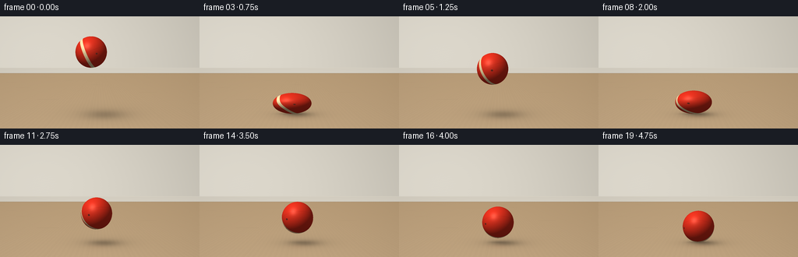
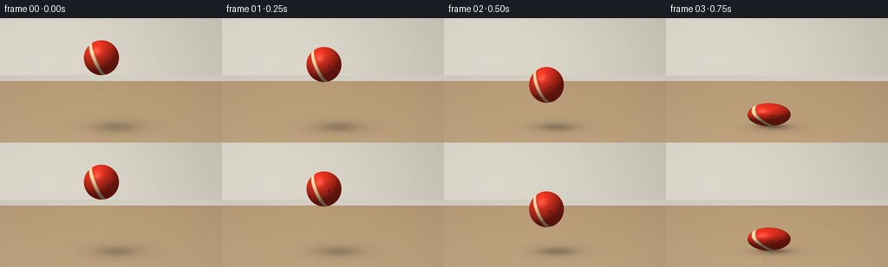
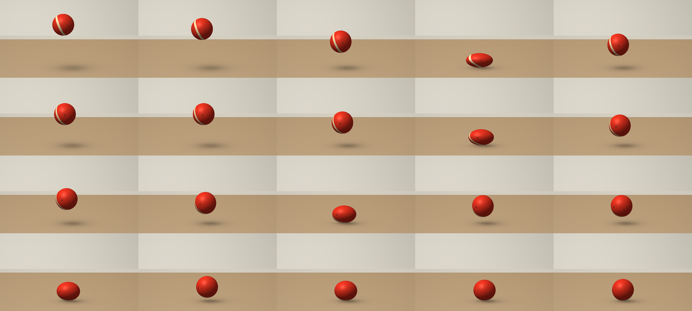

CODING AGENTS AS PIXEL WORLD MODELS
traex/GPT-6.1-Sol · mechanics_0041
点击播放 · 原生 RGB 像素
逐轮保存的候选
回放视频、检查图与代码变化。
每份候选均可单独播放。实际图片检查记录在下方工具轨迹中。
候选 01播放与检查图
点击播放 · 原生 RGB 像素


展开代码变化
--- 上一保存版本
+++ 本次保存版本
@@ -0,0 +1,157 @@
+from pathlib import Path
+import numpy as np
+from PIL import Image
+import artifact_io
+
+ROOT = Path(__file__).resolve().parent
+W,H,S=256,144,4
+Y,X=np.mgrid[0:H*S,0:W*S].astype(np.float32)
+X=(X+.5)/S; Y=(Y+.5)/S
+FLOOR=125.0
+R=20.2
+
+# A fixed, quiet room with a pale plaster wall and satin maple floor.
+def background():
+ a=np.zeros((H*S,W*S,3),np.float32)
+ warm=np.array([218,213,201],np.float32)
+ light=7*np.exp(-((X-65)/135)**2-((Y-23)/78)**2)-.065*X+.035*Y
+ a[:]=warm+light[...,None]
+ wallgrain=.26*np.sin(X*2.45+Y*4.22)+.20*np.cos(X*5.87-Y*1.75)
+ a+=wallgrain[...,None]
+ floor=Y>=73
+ # Project wood grain and seams onto a level surface.
+ dep=np.maximum(Y-65,1)
+ wx=(X-128)*95/dep
+ wz=3700/dep
+ grain=(.50*np.sin(wx*.75+2*np.sin(wz*.018))+
+ .38*np.sin(wx*2.4+.5*np.cos(wz*.033))+
+ .17*np.sin(wx*5.3+wz*.08))
+ shade=9*(Y-73)/(H-73)-5*(X/256)
+ base=np.stack([185+shade+grain*2.1,157+shade+grain*1.65,121+shade+grain*1.2],axis=-1)
+ # Long board joins, deliberately faint and naturally irregular.
+ d=np.abs(((wx+52)%67)-33.5)
+ seam=np.exp(-(d/.32)**2)*6
+ base-=seam[...,None]*np.array([1,.85,.7])
+ # Staggered transverse joints on individual planks.
+ bid=np.floor((wx+52)/67)
+ cross=np.abs(((wz+bid*127)%330)-165)
+ base-=np.exp(-(cross/.8)**2)[...,None]*np.array([4,3.2,2.4])
+ a=np.where(floor[...,None],base,a)
+ # Small baseboard with a beveled top and a floor occlusion line.
+ board=(Y>=66)&(Y<73)
+ bc=np.stack([211+.4*(Y-66),205+.4*(Y-66),192+.4*(Y-66)],axis=-1)
+ a=np.where(board[...,None],bc,a)
+ a-=np.exp(-((Y-73.1)/.6)**2)[...,None]*np.array([11,10,8])
+ a+=np.exp(-((Y-66.3)/.32)**2)[...,None]*np.array([5,5,4])
+ return a
+BG=background()
+
+# Gravity-driven flights separated by short elastic compression intervals.
+# Contact centers fall exactly on several of the output frames.
+contacts=[(.75,.14,1.0),(2.0,.14,.78),(3.0,.12,.58),(3.75,.10,.39),(4.25,.08,.24),(4.50,.06,.10)]
+g=255.0
+first_start=contacts[0][0]-contacts[0][1]/2
+initial_height=.5*g*first_start**2
+
+def motion(t):
+ if t<first_start:
+ ht=initial_height-.5*g*t*t
+ vel=-g*t
+ sy=1+.045*(t/first_start)**2
+ return max(ht,0),sy,1/np.sqrt(sy),vel,0
+ for i,(mid,dur,strength) in enumerate(contacts):
+ start,end=mid-dur/2,mid+dur/2
+ if start<=t<=end:
+ u=(t-start)/dur
+ sy=1-.34*strength*np.sin(np.pi*u)**1.15
+ return 0,sy,1/np.sqrt(sy),0,i
+ if i+1<len(contacts):
+ nxt=contacts[i+1][0]-contacts[i+1][1]/2
+ if end<t<nxt:
+ T=nxt-end; u=t-end
+ vel=g*(T/2-u)
+ ht=.5*g*u*(T-u)
+ sy=1+.035*min(abs(vel)/150,1)
+ return ht,sy,1/np.sqrt(sy),vel,i+1
+ return 0,1,1,0,6
+
+LIGHT=np.array([-.45,-.68,.58],np.float32); LIGHT/=np.linalg.norm(LIGHT)
+HALF=(LIGHT+np.array([0,0,1],np.float32)); HALF/=np.linalg.norm(HALF)
+
+def render(t):
+ ht,sy,sx,vel,bounce=motion(t)
+ # Almost vertical: very gentle drift and rotation, no unmotivated sliding.
+ cx=117+min(t,4.5)*2.5
+ rx=R*sx; ry=R*sy
+ cy=FLOOR-ry-ht
+ a=BG.copy()
+ # Height-dependent cast shadow, with a tight contact core on landing.
+ shadowx=cx+7+ht*.18
+ shadowrx=21+ht*.17
+ shadowry=4.0+ht*.055
+ d=((X-shadowx)/shadowrx)**2+((Y-(FLOOR+1.0))/shadowry)**2
+ shadow=(.24*np.exp(-d*1.5)+.075*np.exp(-d*.4))*np.exp(-ht/170)
+ a*=1-shadow[...,None]
+ core=np.exp(-((X-cx)/(rx*.80))**2*2-((Y-FLOOR)/1.9)**2*2)*(.23*np.exp(-ht/7))
+ a*=1-core[...,None]
+ # A very subtle warm reflection on the satin finish.
+ refl=np.exp(-((X-cx)/(rx*.9))**2*2-((Y-(FLOOR+5+ht*.10))/(4+ht*.045))**2*2)*.032*np.exp(-ht/28)
+ a=a*(1-refl[...,None])+np.array([215,65,35])*refl[...,None]
+
+ u=(X-cx)/rx; v=(Y-cy)/ry
+ mask=u*u+v*v<1
+ z=np.sqrt(np.maximum(0,1-u*u-v*v))
+ nx=u/sx; ny=v/sy; nz=z
+ norm=np.sqrt(nx*nx+ny*ny+nz*nz)+1e-8
+ nx/=norm;ny/=norm;nz/=norm
+ # Object-space texture is transported with the sphere throughout each bounce.
+ angle=.22+.32*t
+ c,s=np.cos(angle),np.sin(angle)
+ qx=c*u+s*z; qz=-s*u+c*z
+ # Slight tilt gives the decorative cream band a convincingly curved path.
+ qy=.92*v+.392*qx
+ qx=.92*qx-.392*v
+ albedo=np.zeros_like(a);albedo[:]=[224,48,29]
+ # A single broad ivory ribbon, inset with narrow vermillion borders.
+ band=np.abs(qx+.22)
+ edge=np.clip((.105-band)*170+.5,0,1)
+ albedo=albedo*(1-edge[...,None])+np.array([245,221,167])*edge[...,None]
+ # Molded seam: a narrow, understated groove around a second great circle.
+ seam=np.exp(-(qy/.010)**2)
+ albedo*=1-.08*seam[...,None]
+ # Rubber's fine pebbled surface: subtle texture and rough highlights.
+ texture=np.sin(165*qx+11*np.sin(34*qy))*np.sin(157*qy+8*np.sin(29*qz))*np.sin(111*qz+3*qx)
+ diffuse=np.maximum(0,nx*LIGHT[0]+ny*LIGHT[1]+nz*LIGHT[2])
+ hemi=.055*(1-ny)
+ shade=.38+.61*diffuse+hemi
+ color=albedo*shade[...,None]
+ color+=texture[...,None]*1.4
+ sp=np.maximum(0,nx*HALF[0]+ny*HALF[1]+nz*HALF[2])
+ spec=sp**33*29+sp**8*8
+ color+=spec[...,None]*np.array([1,.97,.89])
+ # Soft, wide window glint rather than a glassy point reflection.
+ glint=np.exp(-((u+.30)/.16)**2-((v+.41)/.20)**2)*11
+ color+=glint[...,None]
+ # A small recessed inflation valve follows the material, not the camera.
+ vd=((qx-.46)/.069)**2+((qy-.31)/.069)**2
+ valve=np.clip((1-vd)*7,0,1)*(qz>0)
+ valvecol=np.stack([89+18*diffuse,31+10*diffuse,23+7*diffuse],axis=-1)
+ color=color*(1-valve[...,None])+valvecol*valve[...,None]
+ lip=np.exp(-((np.sqrt(vd)-1.04)/.10)**2)*(qz>0)
+ color+=lip[...,None]*8
+ puncture=np.exp(-vd*13)*(qz>0)
+ color*=1-.48*puncture[...,None]
+ a=np.where(mask[...,None],color,a)
+ # Gentle photographic corner falloff.
+ vignette=1-.055*((X-128)/175)**2-.023*((Y-72)/110)**2
+ a*=vignette[...,None]
+ return np.array(Image.fromarray(np.clip(a,0,255).astype(np.uint8)).resize((W,H),Image.Resampling.LANCZOS))
+
+if __name__=='__main__':
+ frames=np.stack([render(i/4) for i in range(20)])
+ artifact_io.save(frames,ROOT)
+ # Additional chronological contact sheet is for inspection only.
+ sheet=Image.new('RGB',(W*5,H*4))
+ for i,frame in enumerate(frames):
+ sheet.paste(Image.fromarray(frame),((i%5)*W,(i//5)*H))
+ sheet.save(ROOT/'all_frames.png')
可观测工具轨迹
实际执行的命令与返回图片。
命令 1exit 0
/bin/bash -lc 'ls -la && cat prompt.txt && cat GENERATION_RULES.md && cat task_spec.json'
命令 2exit 0
/bin/bash -lc "cat artifact_io.py && python - <<'PY'
import numpy,PIL
print('numpy',numpy.__version__)
PY"命令 3exit 0
/bin/bash -lc "cat > generate.py <<'PY'
from pathlib import Path
import numpy as np
from PIL import Image
import artifact_io
ROOT = Path(__file__).resolve().parent
W,H,S=256,144,4
Y,X=np.mgrid[0:H*S,0:W*S].astype(np.float32)
X=(X+.5)/S; Y=(Y+.5)/S
FLOOR=125.0
R=20.2
# A fixed, quiet room with a pale plaster wall and satin maple floor.
def background():
a=np.zeros((H*S,W*S,3),np.float32)
warm=np.array([218,213,201],np.float32)
light=7*np.exp(-((X-65)/135)**2-((Y-23)/78)**2)-.065*X+.035*Y
a[:]=warm+light[...,None]
wallgrain=.26*np.sin(X*2.45+Y*4.22)+.20*np.cos(X*5.87-Y*1.75)
a+=wallgrain[...,None]
floor=Y>=73
# Project wood grain and seams onto a level surface.
dep=np.maximum(Y-65,1)
wx=(X-128)*95/dep
wz=3700/dep
grain=(.50*np.sin(wx*.75+2*np.sin(wz*.018))+
.38*np.sin(wx*2.4+.5*np.cos(wz*.033))+
.17*np.sin(wx*5.3+wz*.08))
shade=9*(Y-73)/(H-73)-5*(X/256)
base=np.stack([185+shade+grain*2.1,157+shade+grain*1.65,121+shade+grain*1.2],axis=-1)
# Long board joins, deliberately faint and naturally irregular.
d=np.abs(((wx+52)%67)-33.5)
seam=np.exp(-(d/.32)**2)*6
base-=seam[...,None]*np.array([1,.85,.7])
# Staggered transverse joints on individual planks.
bid=np.floor((wx+52)/67)
cross=np.abs(((wz+bid*127)%330)-165)
base-=np.exp(-(cross/.8)**2)[...,None]*np.array([4,3.2,2.4])
a=np.where(floor[...,None],base,a)
# Small baseboard with a beveled top and a floor occlusion line.
board=(Y>=66)&(Y<73)
bc=np.stack([211+.4*(Y-66),205+.4*(Y-66),192+.4*(Y-66)],axis=-1)
a=np.where(board[...,None],bc,a)
a-=np.exp(-((Y-73.1)/.6)**2)[...,None]*np.array([11,10,8])
a+=np.exp(-((Y-66.3)/.32)**2)[...,None]*np.array([5,5,4])
return a
BG=background()
# Gravity-driven flights separated by short elastic compression intervals.
# Contact centers fall exactly on several of the output frames.
contacts=[(.75,.14,1.0),(2.0,.14,.78),(3.0,.12,.58),(3.75,.10,.39),(4.25,.08,.24),(4.50,.06,.10)]
g=255.0
first_start=contacts[0][0]-contacts[0][1]/2
initial_height=.5*g*first_start**2
def motion(t):
if t<first_start:
ht=initial_height-.5*g*t*t
vel=-g*t
sy=1+.045*(t/first_start)**2
return max(ht,0),sy,1/np.sqrt(sy),vel,0
for i,(mid,dur,strength) in enumerate(contacts):
start,end=mid-dur/2,mid+dur/2
if start<=t<=end:
u=(t-start)/dur
sy=1-.34*strength*np.sin(np.pi*u)**1.15
return 0,sy,1/np.sqrt(sy),0,i
if i+1<len(contacts):
nxt=contacts[i+1][0]-contacts[i+1][1]/2
if end<t<nxt:
T=nxt-end; u=t-end
vel=g*(T/2-u)
ht=.5*g*u*(T-u)
sy=1+.035*min(abs(vel)/150,1)
return ht,sy,1/np.sqrt(sy),vel,i+1
return 0,1,1,0,6
LIGHT=np.array([-.45,-.68,.58],np.float32); LIGHT/=np.linalg.norm(LIGHT)
HALF=(LIGHT+np.array([0,0,1],np.float32)); HALF/=np.linalg.norm(HALF)
def render(t):
ht,sy,sx,vel,bounce=motion(t)
# Almost vertical: very gentle drift and rotation, no unmotivated sliding.
cx=117+min(t,4.5)*2.5
rx=R*sx; ry=R*sy
cy=FLOOR-ry-ht
a=BG.copy()
# Height-dependent cast shadow, with a tight contact core on landing.
shadowx=cx+7+ht*.18
shadowrx=21+ht*.17
shadowry=4.0+ht*.055
d=((X-shadowx)/shadowrx)**2+((Y-(FLOOR+1.0))/shadowry)**2
shadow=(.24*np.exp(-d*1.5)+.075*np.exp(-d*.4))*np.exp(-ht/170)
a*=1-shadow[...,None]
core=np.exp(-((X-cx)/(rx*.80))**2*2-((Y-FLOOR)/1.9)**2*2)*(.23*np.exp(-ht/7))
a*=1-core[...,None]
# A very subtle warm reflection on the satin finish.
refl=np.exp(-((X-cx)/(rx*.9))**2*2-((Y-(FLOOR+5+ht*.10))/(4+ht*.045))**2*2)*.032*np.exp(-ht/28)
a=a*(1-refl[...,None])+np.array([215,65,35])*refl[...,None]
u=(X-cx)/rx; v=(Y-cy)/ry
mask=u*u+v*v<1
z=np.sqrt(np.maximum(0,1-u*u-v*v))
nx=u/sx; ny=v/sy; nz=z
norm=np.sqrt(nx*nx+ny*ny+nz*nz)+1e-8
nx/=norm;ny/=norm;nz/=norm
# Object-space texture is transported with the sphere throughout each bounce.
angle=.22+.32*t
c,s=np.cos(angle),np.sin(angle)
qx=c*u+s*z; qz=-s*u+c*z
# Slight tilt gives the decorative cream band a convincingly curved path.
qy=.92*v+.392*qx
qx=.92*qx-.392*v
albedo=np.zeros_like(a);albedo[:]=[224,48,29]
# A single broad ivory ribbon, inset with narrow vermillion borders.
band=np.abs(qx+.22)
edge=np.clip((.105-band)*170+.5,0,1)
albedo=albedo*(1-edge[...,None])+np.array([245,221,167])*edge[...,None]
# Molded seam: a narrow, understated groove around a second great circle.
seam=np.exp(-(qy/.010)**2)
albedo*=1-.08*seam[...,None]
# Rubber's fine pebbled surface: subtle texture and rough highlights.
texture=np.sin(165*qx+11*np.sin(34*qy))*np.sin(157*qy+8*np.sin(29*qz))*np.sin(111*qz+3*qx)
diffuse=np.maximum(0,nx*LIGHT[0]+ny*LIGHT[1]+nz*LIGHT[2])
hemi=.055*(1-ny)
shade=.38+.61*diffuse+hemi
color=albedo*shade[...,None]
color+=texture[...,None]*1.4
sp=np.maximum(0,nx*HALF[0]+ny*HALF[1]+nz*HALF[2])
spec=sp**33*29+sp**8*8
color+=spec[...,None]*np.array([1,.97,.89])
# Soft, wide window glint rather than a glassy point reflection.
glint=np.exp(-((u+.30)/.16)**2-((v+.41)/.20)**2)*11
color+=glint[...,None]
# A small recessed inflation valve follows the material, not the camera.
vd=((qx-.46)/.069)**2+((qy-.31)/.069)**2
valve=np.clip((1-vd)*7,0,1)*(qz>0)
valvecol=np.stack([89+18*diffuse,31+10*diffuse,23+7*diffuse],axis=-1)
color=color*(1-valve[...,None])+valvecol*valve[...,None]
lip=np.exp(-((np.sqrt(vd)-1.04)/.10)**2)*(qz>0)
color+=lip[...,None]*8
puncture=np.exp(-vd*13)*(qz>0)
color*=1-.48*puncture[...,None]
a=np.where(mask[...,None],color,a)
# Gentle photographic corner falloff.
vignette=1-.055*((X-128)/175)**2-.023*((Y-72)/110)**2
a*=vignette[...,None]
return np.array(Image.fromarray(np.clip(a,0,255).astype(np.uint8)).resize((W,H),Image.Resampling.LANCZOS))
if __name__=='__main__':
frames=np.stack([render(i/4) for i in range(20)])
artifact_io.save(frames,ROOT)
# Additional chronological contact sheet is for inspection only.
sheet=Image.new('RGB',(W*5,H*4))
for i,frame in enumerate(frames):
sheet.paste(Image.fromarray(frame),((i%5)*W,(i//5)*H))
sheet.save(ROOT/'all_frames.png')
PY
python generate.py"命令 4exit 0
/bin/bash -lc "python - <<'PY'
from pathlib import Path
import numpy as np
p=Path('.')
a=np.load(p/'pixels.npz')['pixels']
print('Packed RGB:',a.shape,a.dtype)
print('Saved frames:',len(list((p/'frames').glob('*.png'))))
for f in ['generate.py','pixels.npz','index.html','inspection.png','transition_check.png']:
print(f,(p/f).stat().st_size,'bytes')
PY"视觉工具实际返回图片 1

保存候选 1 份；完成命令 4 次；可验证图片返回 1 张。原始 API 响应与完整日志保留在本地。